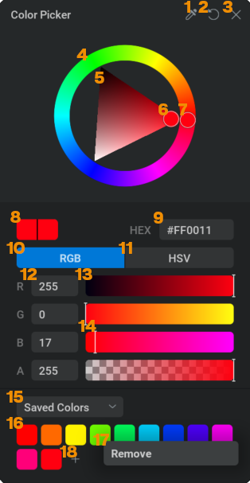
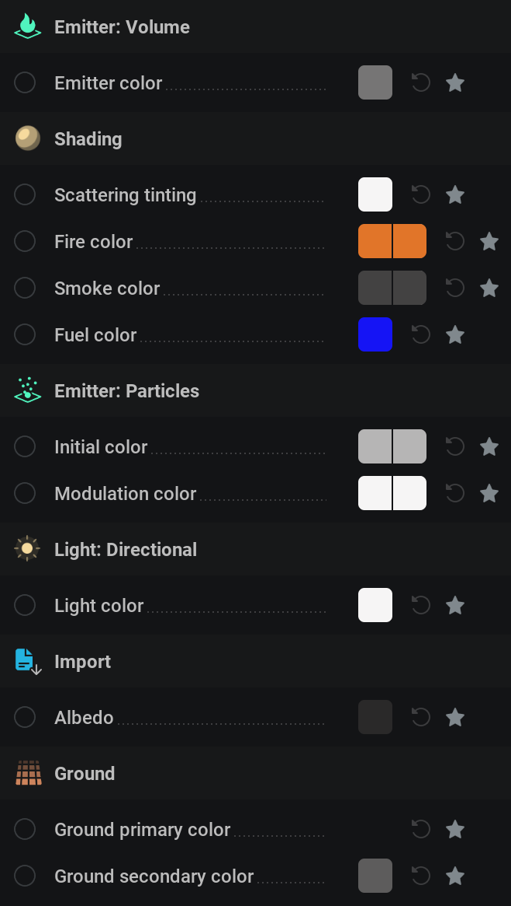
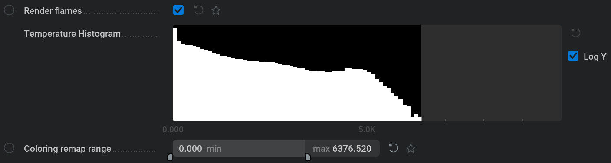

颜色#
Color 是一类输出颜色值的节点。
Color Nodes（颜色节点）#
{kind=link}
 Color: Constant（常量颜色）#
Color: Constant（常量颜色）#
输出单个颜色值。
你可以  单击彩色方块以打开 Color Picker。
单击彩色方块以打开 Color Picker。
Color Picker（颜色选择器）#

 将颜色重置为该参数的默认值。
将颜色重置为该参数的默认值。 关闭颜色选择器。颜色会保持为颜色选择器中当前选中的颜色。你也可以点击颜色选择器外部来关闭它。
关闭颜色选择器。颜色会保持为颜色选择器中当前选中的颜色。你也可以点击颜色选择器外部来关闭它。Hue ring（色相环）。显示所有色相。选中的色相会用圆圈 7 你可以
 在圆环上的任意位置单击或点击拖动以选择色相。
在圆环上的任意位置单击或点击拖动以选择色相。Brightness and saturation triangle（亮度与饱和度三角）。三个角分别表示白色、黑色和完全饱和的颜色。选中的值会用圆圈 6 你可以
在三角形上的任意位置单击或点击拖动以选择颜色。
{kind=link}
Current Color（当前颜色）
HEX code（HEX 代码）。你可以在这里输入十六进制代码来获得指定颜色，方法是
点击文本字段。RGB Mode（RGB 模式）。这会让滑块以 Red（红）、Green（绿）、Blue（蓝）数值表示颜色，全部映射到 0 到 255。
HSV Mode（HSV 模式）。这会让滑块以 Hue（色相）、Saturation（饱和度）、Value（明度）表示颜色。 Hue 会从 0 到 360 度以环形方式映射，起点和终点都是红色；使用这个滑块时，可以看到色相环中的圆圈在转动。Saturation（饱和度）和 Value（明度）映射为 0% 到 100%；Saturation 从灰度映射到完全饱和，Value 从黑色映射到基于当前色相和饱和度的最亮颜色。
Channel Values（通道值）。这些值表示旁边滑块的数值。
在文本框内单击即可手动输入数值。Channel Sliders（通道滑块）。这些滑块可用于修改颜色。滑块上的渐变表示如果指示器 14 位于该位置时选中颜色会是什么样。你可以
在滑块上的任意位置单击或点击拖动以选择颜色。
Swatch Dropdown（色板下拉菜单）。
Saved Colors（已保存颜色） 包含已保存颜色的色板 16 可以使用
图标 18，用于保存所选颜色。也可以通过
右键单击其中一个并选择 Remove 17。
Recent Colors（最近颜色） 包含最近使用的 9 种颜色。关闭颜色选择器时，所选颜色会存为 Recent Colors 色板最右侧的最新颜色，其他颜色会依次向左移动一位，最左侧的颜色会被丢弃。
Color: Gradient（颜色渐变）#
{kind=link}
Interpolation Color Space（插值颜色空间）： 一个下拉菜单，包含在颜色渐变中从一个点到另一个点插值颜色的不同方法。
- Color Gradient Presets（颜色渐变预设）
- 将当前渐变保存为预设，该预设会作为可选图标显示在左侧。
若要从列表中移除某个预设，可以
右键单击其中一个并选择 Delete（位于上下文菜单）。Load 这会打开文件浏览器，你可以查找 .embercg 文件并将其作为渐变加载。
Export * embercg: 打开文件浏览器，将当前渐变保存为 .embercg 文件到指定位置。 请注意，Interpolation Color Space（插值颜色空间）也会保存在预设中 * PNG: 打开文件浏览器，将当前渐变保存为 .png 文件到指定位置。此文件格式可加载到大多数软件中，例如作为另一个体积着色器的颜色输入。图像分辨率为 512 x 12 像素，意味着可以存储 512 种不同颜色。
 Color Selector（颜色选择器节点）#
Color Selector（颜色选择器节点）#
基于渐变上的指定位置，从 Color Gradient 节点输出单个颜色。
连接颜色节点#
颜色节点可以连接到颜色参数。
该参数的颜色随后会由颜色节点控制。
颜色参数可以通过其旁边的彩色方块来识别。
以下是一些可由颜色节点控制的参数示例：
{kind=link}

若要公开用于连接颜色节点的颜色参数引脚，

需要将覆盖状态设置为 Pin Override，通过  点击参数旁边的图标。
点击参数旁边的图标。
其中 Smoke color 和 Fire color 不同。
这些参数公开颜色参数引脚的方式不同，因为需要将上方的下拉菜单设置为 Exposed Color Gradient。
这些参数应连接到 Color Gradient 节点。
渐变右侧表示烟或火的最高值，左侧表示最低值。
可以使用着色节点中的 Coloring remap range 参数调整数值映射到渐变的范围。其上方的直方图显示体素密度所在的范围。为了得到良好的映射，通常先调整最大值，让范围（黑色区域）包住白色条形。

可以使用 Coloring remap ramp 参数，通过 gamma 运算改变该范围的插值方式。较低的值会把颜色推向输入颜色渐变的右侧，较高的值会把颜色推向渐变的左侧。
颜色参数旁边也可能有两个方块，例如  Color: Constant 节点就是如此。这表示该参数也支持 Alpha 通道。
Color: Constant 节点就是如此。这表示该参数也支持 Alpha 通道。